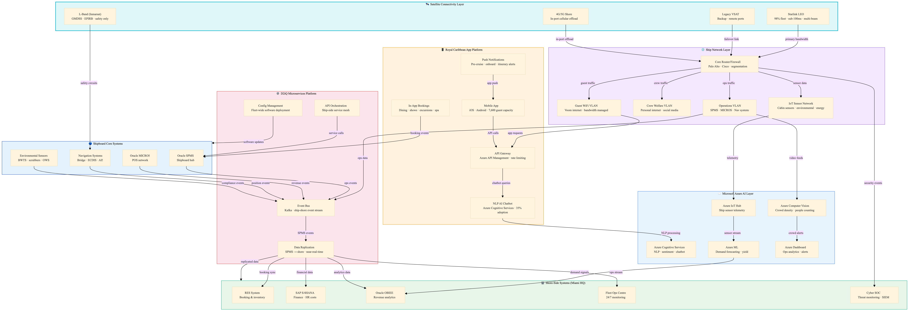

Connectivity & Digital Infrastructure
Starlink → ship network → Royal App → Azure AI → D2iQ microservices · Updated 2026-03-28 22:00
🗺️
Enterprise Architecture Diagram

Click diagram to open fullscreen | Scroll to zoom | Drag to pan
📋
Architecture Notes
Royal Caribbean's digital infrastructure is anchored by Starlink satellite providing sub-100ms latency to 98% of the fleet, enabling a cloud-native ship-shore architecture. The Royal Caribbean App serves as the primary guest interface, processing AI chatbot interactions via Azure Cognitive Services. Azure AI Vision monitors crowd density across 20+ zones on Icon-class ships. Mesosphere/D2iQ provides the microservices bus for ship-shore data replication, enabling real-time revenue visibility, crew management updates, and operational analytics from Miami headquarters.
- Starlink replaced legacy VSAT on 98% of fleet by 2025 — latency dropped from 600ms to sub-100ms
- Royal App achieved 35% year-on-year adoption increase — now primary service channel on new ships
- Azure AI Vision monitors 20+ crowd density zones on Icon of the Seas — feeds flow optimisation
- D2iQ (formerly Mesosphere) provides Kubernetes-based microservices for ship-shore event streaming
- Ship WiFi runs on three segregated VLANs: guest internet, crew welfare, and operational systems